library(tidyverse) # carrega el tidyverse (inclou ggplot2)
competencies <- read_csv2("dades/competencies_basiques_net.csv") # importa les dades netesTutorial: primers gràfics amb ggplot2
Sessió 2 · Per a qui ja ha acabat la pràctica
NotaPer a qui és aquest tutorial?
Per a qui ja ha acabat la pràctica de la sessió 1 i vol començar a fer gràfics amb R. No cal saber res de gràfics: anirem pas a pas.
Com s’ha de fer: obriu un script nou a RStudio (File → New File → R Script), copieu-hi el codi de cada pas (amb el botó 📋 de la dreta de cada bloc), executeu-lo amb Ctrl + Enter i mireu què surt al panell Plots (a baix a la dreta). Cada línia de codi té un comentari (#) que explica què fa. Al final de cada apartat hi ha un «Prova-ho» per practicar, amb la solució amagada.
0. Preparació
Farem servir les dades de competències bàsiques ja netes. Trieu l’opció que us vagi bé:
Opció A. Si treballeu al projecte de la sessió 1 (sessio_1.Rproj) i ja heu exportat les dades netes al pas 10 de la pràctica:
Opció B. Si treballeu al projecte de la sessió 2 (sessio_2.Rproj):
library(tidyverse) # carrega el tidyverse (inclou ggplot2)
competencies <- read_csv2("dades/competencies.csv") # importa les dades netesEn tots dos casos, cal tornar a ordenar habitat (el CSV no guarda l’ordre de les categories):
competencies <- competencies |>
mutate(habitat = factor(habitat, # converteix habitat en factor...
levels = c("Fins a 10000", # ...amb les categories en aquest ordre
"De 10001 a 100000",
"Més de 100000")))
Consell
No cal instal·lar res: ggplot2 és un dels paquets que es carreguen amb library(tidyverse).
1. La idea: un gràfic es construeix per capes
Amb ggplot2, un gràfic és una suma de capes, unides amb el signe +:
ggplot(dades, aes(x = variable)) + # 1. Quines dades i quina variable va a cada eix
geom_bar() + # 2. Quin tipus de gràfic (la "geometria")
labs(x = "Títol de l'eix X") # 3. Etiquetes, colors, estil...ggplot()prepara el «llenç»: quines dades fem servir.aes()(de aesthetics) diu quina variable va a cada eix:x =,y =.- Les funcions
geom_...()diuen quin tipus de gràfic volem: barres, histograma, caixa… - Amb
labs(),theme_...()i altres capes, anem millorant l’aspecte.
AlertaAtenció:
+, no |>
Entre les capes d’un gràfic es fa servir +, no el pipe |>. És l’error més habitual quan es comença. I el + sempre va al final de la línia, no al principi de la següent.
2. El primer gràfic: barres
Construïm el gràfic pas a pas. Primer, només el llenç:
ggplot(competencies, aes(x = habitat)) # dades: competencies; eix X: habitat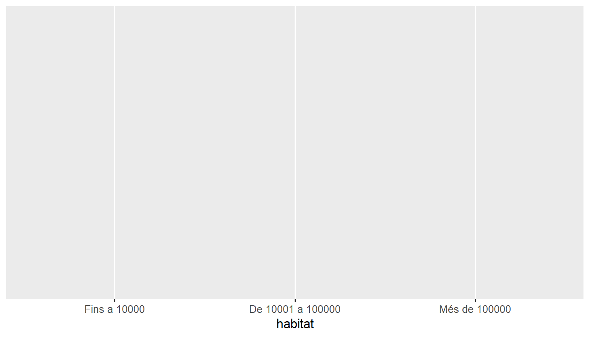
Surt buit: hem dit quina variable va a l’eix X, però no quin tipus de gràfic volem. Afegim les barres amb geom_bar(), que compta quants alumnes hi ha a cada categoria (com count()):
ggplot(competencies, aes(x = habitat)) + # dades i variable de l'eix X
geom_bar() # una barra per categoria, amb l'alçada = nombre d'alumnes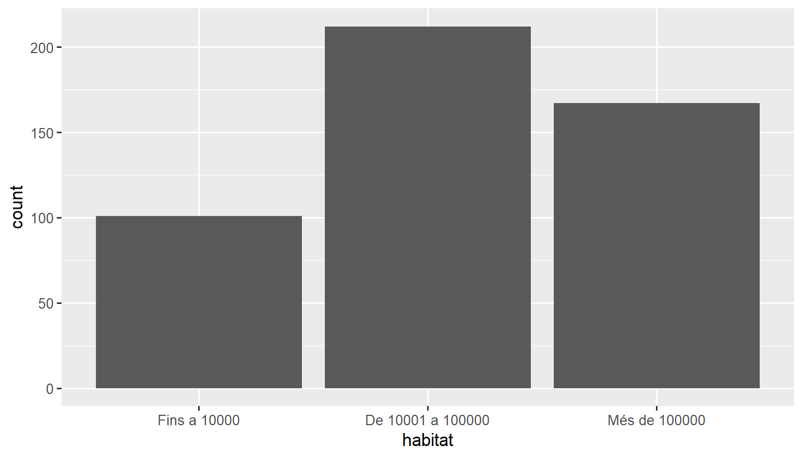
Ara ho fem més entenedor: títols dels eixos amb labs() i un estil més net amb theme_minimal():
ggplot(competencies, aes(x = habitat)) + # dades i variable de l'eix X
geom_bar() + # gràfic de barres
labs(x = "Mida del municipi", # títol de l'eix X
y = "Nombre d'alumnes", # títol de l'eix Y
title = "Alumnes de 6è segons la mida del municipi") + # títol del gràfic
theme_minimal() # estil net: fons blanc i poques línies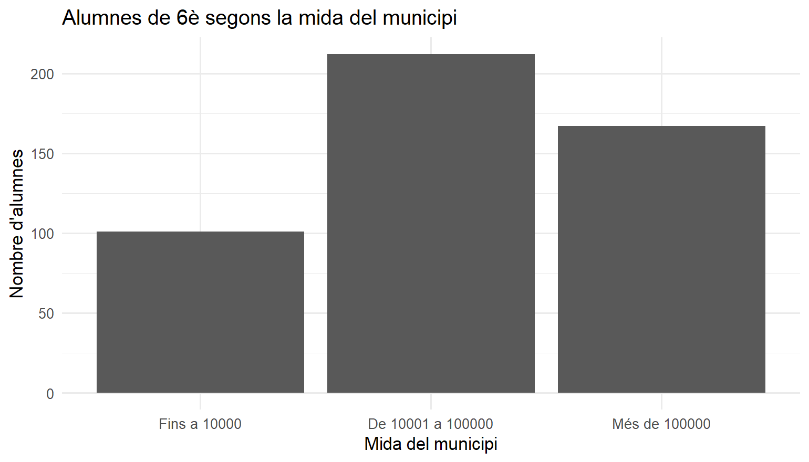
I, finalment, un color. El color de farciment de les barres es canvia amb fill:
ggplot(competencies, aes(x = habitat)) + # dades i variable de l'eix X
geom_bar(fill = "#6D071A", # color de les barres
width = 0.6) + # amplada de les barres (de 0 a 1)
labs(x = "Mida del municipi", # títol de l'eix X
y = "Nombre d'alumnes", # títol de l'eix Y
title = "Alumnes de 6è segons la mida del municipi") + # títol del gràfic
theme_minimal() # estil net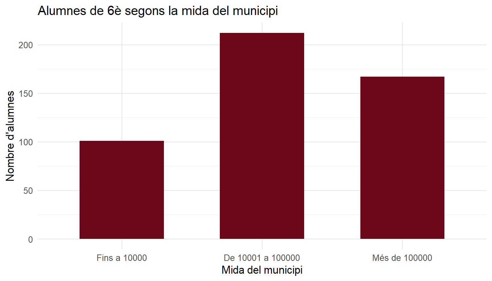
Consell
Els colors es poden posar amb codi hexadecimal (com "#6D071A") o amb nom en anglès: "steelblue", "darkred", "grey40"…
Nota✍️ Prova-ho: gràfic de barres de
titularitat (cliqueu per veure la solució)
Feu un gràfic de barres de la variable titularitat, amb els eixos ben etiquetats i el color que vulgueu.
ggplot(competencies, aes(x = titularitat)) + # dades i variable de l'eix X
geom_bar(fill = "steelblue", width = 0.5) + # barres blaves i estretes
labs(x = "Titularitat del centre", # títol de l'eix X
y = "Nombre d'alumnes") + # títol de l'eix Y
theme_minimal() # estil net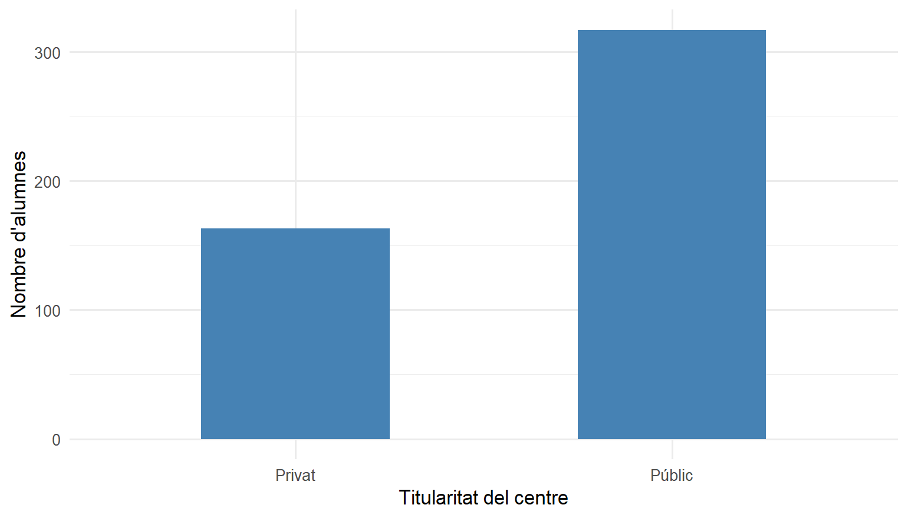
3. Histograma: variables numèriques
Per a una variable numèrica (com una nota), no podem fer una barra per a cada valor: n’hi ha massa. L’histograma agrupa els valors en intervals i compta quants n’hi ha a cadascun. Amb binwidth triem l’amplada de cada interval (aquí, de 5 en 5 punts):
ggplot(competencies, aes(x = nota_cat)) + # dades i variable de l'eix X
geom_histogram(binwidth = 5, # intervals de 5 punts
fill = "#D8A9B1", # color de dins de les barres
color = "white") + # color de la vora de les barres
labs(x = "Puntuació de català (0-100)", # títol de l'eix X
y = "Nombre d'alumnes") + # títol de l'eix Y
theme_minimal() # estil net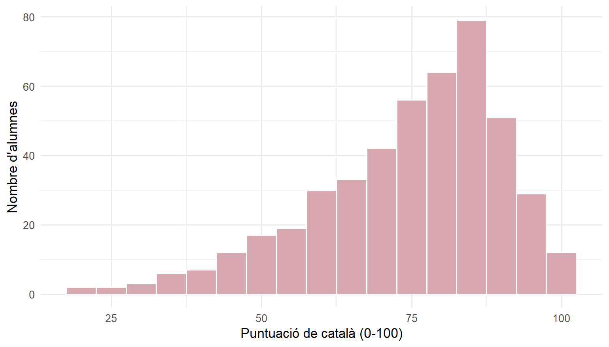
Proveu de canviar binwidth = 5 per 2 o per 20. Veureu que la forma canvia molt: si els intervals són massa estrets o massa amples, costa veure la forma real.
NotaI aquest avís?
Quan ho executeu a RStudio, veureu un avís a la consola: Removed 16 rows containing non-finite outside the scale range. No és cap error: hi ha 16 alumnes sense nota de català (NA), i ggplot2 ens diu que no els ha pogut dibuixar. És el mateix problema que resolíem amb na.rm = TRUE.
Nota✍️ Prova-ho: histograma de la nota de matemàtiques (cliqueu per veure la solució)
Feu un histograma de nota_mat. Té la mateixa forma que el de català?
ggplot(competencies, aes(x = nota_mat)) + # dades i variable de l'eix X
geom_histogram(binwidth = 5, fill = "steelblue", color = "white") + # intervals de 5 punts
labs(x = "Puntuació de matemàtiques (0-100)", # títol de l'eix X
y = "Nombre d'alumnes") + # títol de l'eix Y
theme_minimal() # estil net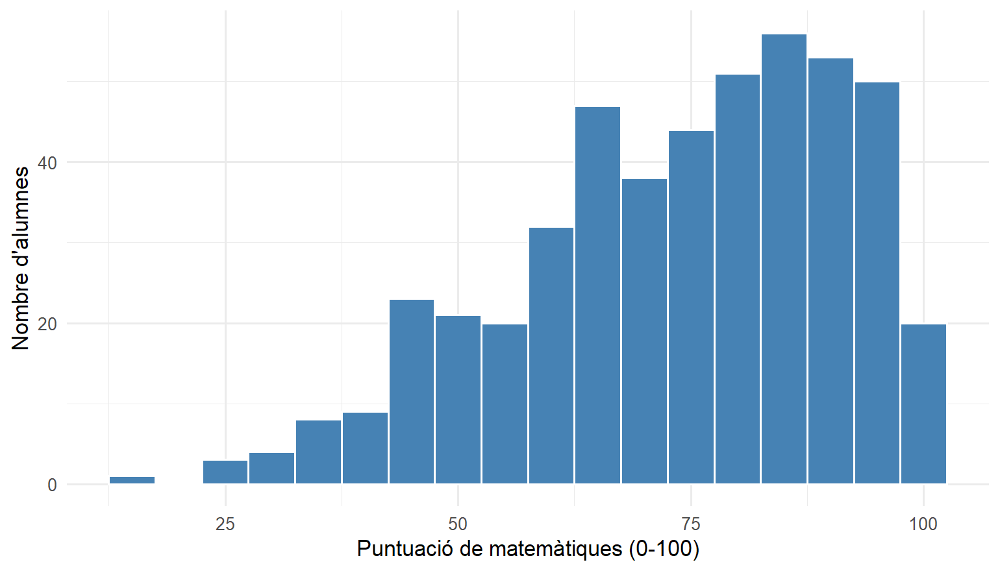
Totes dues tenen una cua cap a l’esquerra (una minoria d’alumnes amb notes molt baixes), però les notes de matemàtiques estan més escampades.
4. Diagrama de caixa (boxplot)
El boxplot resumeix una variable numèrica amb els quartils (els que calculàvem amb quantile()). Ara la variable va a l’eix Y:
ggplot(competencies, aes(y = nota_cat)) + # dades i variable de l'eix Y
geom_boxplot(fill = "#D8A9B1", # color de la caixa
width = 0.4) + # amplada de la caixa
labs(y = "Puntuació de català") + # títol de l'eix Y
theme_minimal() # estil net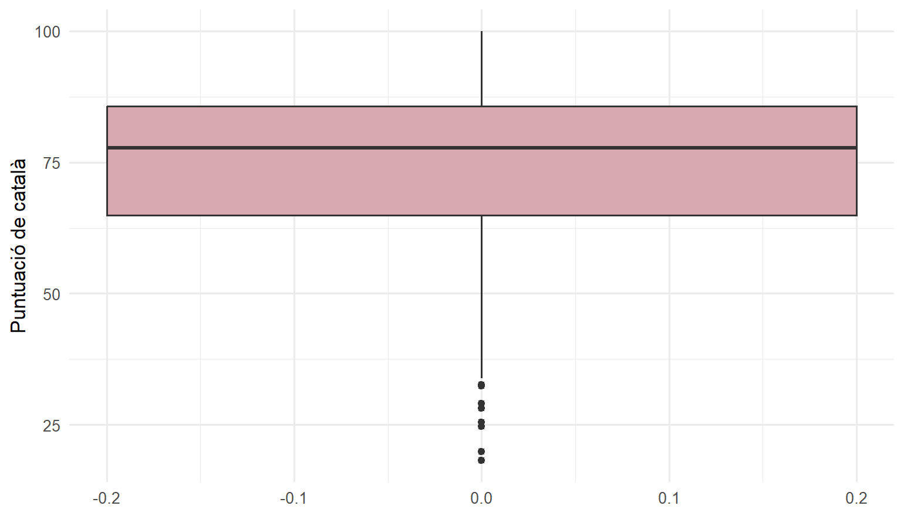
On es fa realment útil el boxplot és per comparar grups: si posem una variable categòrica a l’eix X, en surt una caixa per a cada grup.
ggplot(competencies, aes(x = titularitat, # eix X: els grups (públic / privat)
y = nota_cat)) + # eix Y: la nota
geom_boxplot(fill = "#D8A9B1", width = 0.5) + # una caixa per a cada grup
labs(x = "Titularitat del centre", # títol de l'eix X
y = "Puntuació de català") + # títol de l'eix Y
theme_minimal() # estil net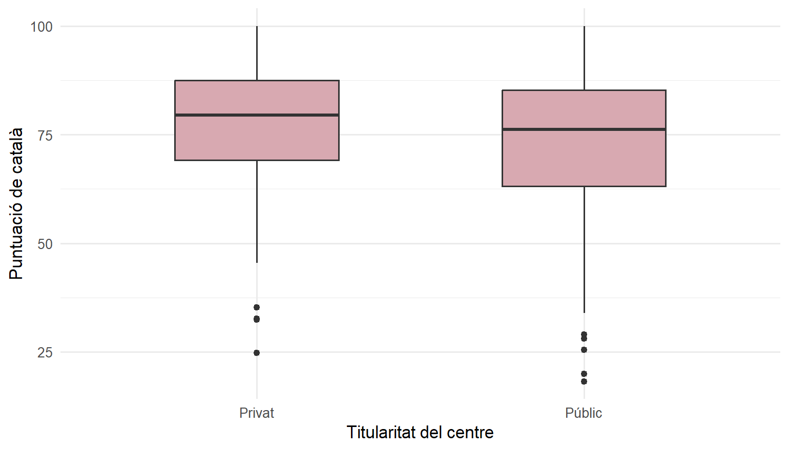
A la mostra, els alumnes dels centres privats tenen la caixa una mica més amunt. Si aquesta diferència és prou gran per generalitzar-la a tot Catalunya ho veurem a la sessió 3.
Nota✍️ Prova-ho: notes de matemàtiques per gènere (cliqueu per veure la solució)
Feu un boxplot de nota_mat per a dones i homes (genere).
ggplot(competencies, aes(x = genere, y = nota_mat)) + # grups a l'eix X, nota a l'eix Y
geom_boxplot(fill = "steelblue", width = 0.5) + # una caixa per grup
labs(x = NULL, # sense títol a l'eix X
y = "Puntuació de matemàtiques") + # títol de l'eix Y
theme_minimal() # estil net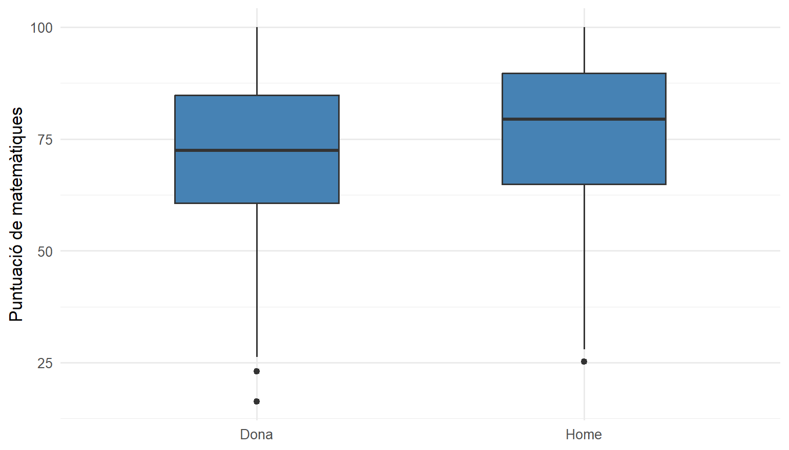
5. Colors segons una variable
Fins ara hem posat un color fix a totes les barres. Però també podem fer que el color depengui d’una variable: en aquest cas, el fill va dins de l’aes().
ggplot(competencies, aes(x = habitat, # eix X: mida del municipi
fill = titularitat)) + # color de les barres segons la titularitat
geom_bar(position = "dodge") + # barres una al costat de l'altra
labs(x = "Mida del municipi", # títol de l'eix X
y = "Nombre d'alumnes", # títol de l'eix Y
fill = "Titularitat") + # títol de la llegenda
theme_minimal() # estil net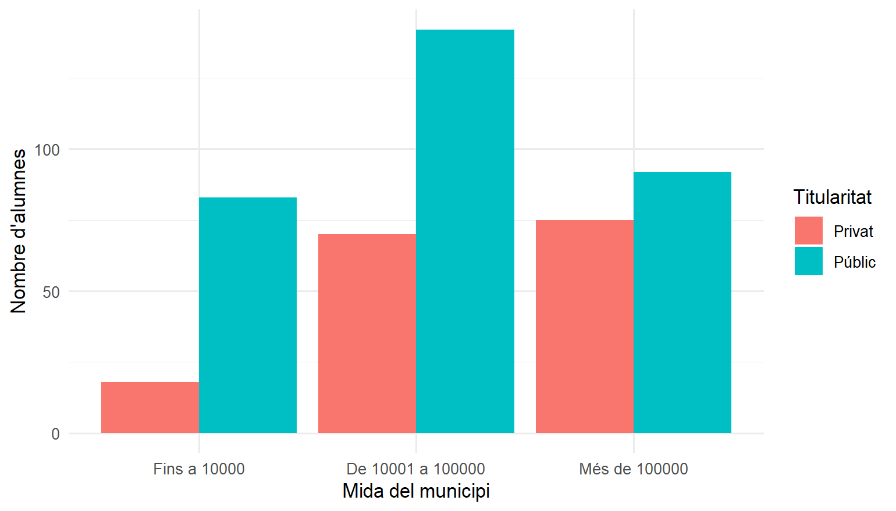
fill = titularitatdins d’aes(): un color per a cada valor de la variable, i R hi afegeix la llegenda.position = "dodge"posa les barres una al costat de l’altra. Proveu de treure-ho: les barres es posen una a sobre de l’altra.
ImportantDins o fora d’
aes()?
- Dins d’
aes(): el color depèn d’una variable →aes(fill = titularitat) - Fora d’
aes(): un color fix per a tot →geom_bar(fill = "steelblue")
Si poseu un color fix dins d’aes() (aes(fill = "steelblue")), R el tracta com si fos una variable i el resultat és estrany.
6. Desar el gràfic
ggsave() desa l’últim gràfic que heu fet en un fitxer d’imatge, a la carpeta del projecte:
ggsave("grafic_habitat.png", # nom del fitxer
width = 8, # amplada (en polzades)
height = 5) # alçada (en polzades)El fitxer apareixerà al panell Files i el podeu enganxar en un document o una presentació.
7. Quan alguna cosa falla
| Què passa | Per què | Solució |
|---|---|---|
could not find function "ggplot" |
No heu carregat el paquet | library(tidyverse) |
| Només surt el llenç buit | Falta la capa geom_...() |
Afegiu-la amb + |
object 'nota_ct' not found |
El nom de la variable està mal escrit | Reviseu-lo amb glimpse(competencies) |
Error amb |> entre capes |
Entre capes va + |
Canvieu |> per + |
| El gràfic no inclou l’última capa | El + és al principi d’una línia |
Poseu el + al final de la línia anterior |
Xuleta
| Vull… | Codi |
|---|---|
| Barres d’una variable categòrica | ggplot(dades, aes(x = var)) + geom_bar() |
| Histograma d’una variable numèrica | ggplot(dades, aes(x = var)) + geom_histogram(binwidth = 5) |
| Boxplot d’una variable numèrica | ggplot(dades, aes(y = var)) + geom_boxplot() |
| Boxplot per grups | ggplot(dades, aes(x = grup, y = var)) + geom_boxplot() |
| Títols | + labs(x = "...", y = "...", title = "...") |
| Estil net | + theme_minimal() |
| Color fix | geom_bar(fill = "steelblue") |
| Color segons una variable | aes(fill = variable) |
| Desar | ggsave("fitxer.png", width = 8, height = 5) |
Per anar més lluny
- Slides d’estadística descriptiva de la sessió 1: principis per fer bons gràfics i exemples de què no fer.
- R for Data Science, capítol «Data visualization» (en anglès): la introducció de referència a
ggplot2. - Xuleta oficial de
ggplot2(PDF, en anglès): totes les geometries i opcions en dues pàgines.